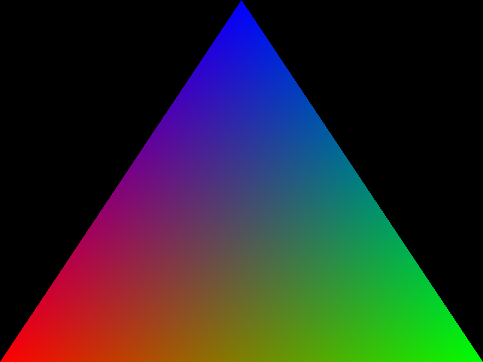

How to use the vklite C API¶
This example shows how to write a standalone C app using only the vklite API (thin wrapper on top of the Vulkan C API), not the canvas or scene API.
Creating a Vulkan-aware window is a complex operation as it requires creating a swapchain and implementing a rendering loop using proper CPU-GPU and GPU-GPU synchronization. The canvas abstracts that complexity away and there are probably few reasons not to use it. Therefore, the main reason to use the vklite API directly is probably when doing offscreen rendering and/or compute, and when reusing existing visuals and graphics in Datoviz is not desirable.
On this page, we'll show how to make an offscreen render of a triangle using only the vklite API. We'll cover the following steps:
- Creating a GPU with custom queues.
- Creating a render pass.
- Creating GPU images for rendering.
- Creating framebuffers.
- Creating a graphics pipeline.
- Creating pipeline bindings.
- Creating a vertex buffer.
- Creating and recording a command buffer.
- Submitting a command buffer to the GPU and waiting until it has completed.
- Making a screenshot by creating a staging GPU image, and submitting a command buffer with transition barriers and a GPU image copy.
This "hello world" script is about 250 lines long (without comments), about 4x smaller than by using the raw Vulkan C API.

// code from `examples/standalone_vklite.c`:
/*************************************************************************************************/
/* Example of a standalone application using the vklite API in a canvas. */
/*************************************************************************************************/
/// Import the library public header.
#include <datoviz/datoviz.h>
// This function downloads the contents of the GPU image on which we have rendered to.
static uint8_t* screenshot(DvzImages* image)
{
DvzGpu* gpu = image->gpu;
// We create a staging image that is accessible from the CPU.
DvzImages staging = dvz_images(gpu, VK_IMAGE_TYPE_2D, 1);
dvz_images_format(&staging, image->format);
dvz_images_size(&staging, image->width, image->height, image->depth);
dvz_images_tiling(&staging, VK_IMAGE_TILING_LINEAR);
dvz_images_usage(&staging, VK_IMAGE_USAGE_TRANSFER_DST_BIT);
dvz_images_layout(&staging, VK_IMAGE_LAYOUT_TRANSFER_DST_OPTIMAL);
dvz_images_memory(
&staging, VK_MEMORY_PROPERTY_HOST_VISIBLE_BIT | VK_MEMORY_PROPERTY_HOST_COHERENT_BIT);
dvz_images_create(&staging);
// We start the image transition command buffers.
DvzCommands cmds = dvz_commands(gpu, 0, 1);
dvz_cmd_begin(&cmds, 0);
// We use a barrier to transition the staging image.
DvzBarrier barrier = dvz_barrier(gpu);
dvz_barrier_stages(&barrier, VK_PIPELINE_STAGE_TRANSFER_BIT, VK_PIPELINE_STAGE_TRANSFER_BIT);
dvz_barrier_images(&barrier, &staging);
dvz_barrier_images_layout(
&barrier, VK_IMAGE_LAYOUT_UNDEFINED, VK_IMAGE_LAYOUT_TRANSFER_DST_OPTIMAL);
dvz_barrier_images_access(&barrier, 0, VK_ACCESS_TRANSFER_WRITE_BIT);
dvz_cmd_barrier(&cmds, 0, &barrier);
// We copy the original image to the staging image.
dvz_cmd_copy_image(&cmds, 0, image, &staging);
// We transition the staging image again.
dvz_barrier_images_layout(
&barrier, VK_IMAGE_LAYOUT_TRANSFER_DST_OPTIMAL, VK_IMAGE_LAYOUT_GENERAL);
dvz_barrier_images_access(&barrier, VK_ACCESS_TRANSFER_WRITE_BIT, VK_ACCESS_MEMORY_READ_BIT);
dvz_cmd_barrier(&cmds, 0, &barrier);
// We end the command buffer, we submit it to the GPU, and we wait until the GPU has completed
// it.
dvz_cmd_end(&cmds, 0);
dvz_cmd_submit_sync(&cmds, 0);
// Now, we copy the staging image back onto the host.
uint8_t* rgb = (uint8_t*)calloc(image->width * image->height, 3);
dvz_images_download(&staging, 0, true, false, rgb);
// We can destroy the staging image.
dvz_images_destroy(&staging);
return rgb;
}
int main(int argc, char** argv)
{
// We create a singleton application with a GLFW backend.
DvzApp* app = dvz_app(DVZ_BACKEND_GLFW);
// We use the first detected GPU. The last argument is the GPU index.
DvzGpu* gpu = dvz_gpu(app, 0);
// GPU creation.
{
// We specify the queues we need. Here we just need a single queue that will do the
// rendering.
dvz_gpu_queue(gpu, 0, DVZ_QUEUE_RENDER);
// Once the queues have been set up, we create the GPU.
dvz_gpu_create(gpu, 0);
}
// Framebuffer size.
const uint32_t width = 800;
const uint32_t height = 600;
// Viewport.
DvzViewport viewport = dvz_viewport_default(width, height);
// We are going to create a renderpass.
DvzRenderpass renderpass = dvz_renderpass(gpu);
VkClearValue clear_color = {0};
VkClearValue clear_depth = {0};
// We create a GPU image that we will render onto.
DvzImages image = dvz_images(gpu, VK_IMAGE_TYPE_2D, 1);
// We also create a GPU image for the depth buffer.
DvzImages depth = dvz_images(gpu, VK_IMAGE_TYPE_2D, 1);
// We will create the framebuffers to link these GPU images with the renderpass.
DvzFramebuffers framebuffers = dvz_framebuffers(gpu);
// Renderpass creation.
{
// Clear colors.
clear_color.color.float32[3] = 1;
clear_depth.depthStencil.depth = 1.0f;
dvz_renderpass_clear(&renderpass, clear_color);
dvz_renderpass_clear(&renderpass, clear_depth);
// Color attachment.
dvz_renderpass_attachment(
&renderpass, 0, //
DVZ_RENDERPASS_ATTACHMENT_COLOR, VK_FORMAT_B8G8R8A8_UNORM,
VK_IMAGE_LAYOUT_COLOR_ATTACHMENT_OPTIMAL);
dvz_renderpass_attachment_layout(
&renderpass, 0, VK_IMAGE_LAYOUT_UNDEFINED, VK_IMAGE_LAYOUT_TRANSFER_SRC_OPTIMAL);
dvz_renderpass_attachment_ops(
&renderpass, 0, VK_ATTACHMENT_LOAD_OP_CLEAR, VK_ATTACHMENT_STORE_OP_STORE);
// Depth attachment.
dvz_renderpass_attachment(
&renderpass, 1, //
DVZ_RENDERPASS_ATTACHMENT_DEPTH, VK_FORMAT_D32_SFLOAT,
VK_IMAGE_LAYOUT_DEPTH_STENCIL_ATTACHMENT_OPTIMAL);
dvz_renderpass_attachment_layout(
&renderpass, 1, VK_IMAGE_LAYOUT_UNDEFINED,
VK_IMAGE_LAYOUT_DEPTH_STENCIL_ATTACHMENT_OPTIMAL);
dvz_renderpass_attachment_ops(
&renderpass, 1, VK_ATTACHMENT_LOAD_OP_CLEAR, VK_ATTACHMENT_STORE_OP_DONT_CARE);
// Subpass.
dvz_renderpass_subpass_attachment(&renderpass, 0, 0);
dvz_renderpass_subpass_attachment(&renderpass, 0, 1);
dvz_renderpass_subpass_dependency(&renderpass, 0, VK_SUBPASS_EXTERNAL, 0);
dvz_renderpass_subpass_dependency_stage(
&renderpass, 0, //
VK_PIPELINE_STAGE_COLOR_ATTACHMENT_OUTPUT_BIT,
VK_PIPELINE_STAGE_COLOR_ATTACHMENT_OUTPUT_BIT);
dvz_renderpass_subpass_dependency_access(
&renderpass, 0, 0,
VK_ACCESS_COLOR_ATTACHMENT_READ_BIT | VK_ACCESS_COLOR_ATTACHMENT_WRITE_BIT);
// Color attachment
dvz_images_format(&image, renderpass.attachments[0].format);
dvz_images_size(&image, width, height, 1);
dvz_images_tiling(&image, VK_IMAGE_TILING_OPTIMAL);
dvz_images_usage(
&image, VK_IMAGE_USAGE_COLOR_ATTACHMENT_BIT | VK_IMAGE_USAGE_TRANSFER_SRC_BIT);
dvz_images_memory(&image, VK_MEMORY_PROPERTY_DEVICE_LOCAL_BIT);
dvz_images_aspect(&image, VK_IMAGE_ASPECT_COLOR_BIT);
dvz_images_layout(&image, VK_IMAGE_LAYOUT_TRANSFER_SRC_OPTIMAL);
dvz_images_queue_access(&image, 0);
dvz_images_create(&image);
// Depth attachment.
dvz_images_format(&depth, renderpass.attachments[1].format);
dvz_images_size(&depth, width, height, 1);
dvz_images_tiling(&depth, VK_IMAGE_TILING_OPTIMAL);
dvz_images_usage(&depth, VK_IMAGE_USAGE_DEPTH_STENCIL_ATTACHMENT_BIT);
dvz_images_memory(&depth, VK_MEMORY_PROPERTY_DEVICE_LOCAL_BIT);
dvz_images_layout(&depth, VK_IMAGE_LAYOUT_TRANSFER_SRC_OPTIMAL);
dvz_images_aspect(&depth, VK_IMAGE_ASPECT_DEPTH_BIT);
dvz_images_queue_access(&depth, 0);
dvz_images_create(&depth);
// Create renderpass.
dvz_renderpass_create(&renderpass);
// Create framebuffers.
dvz_framebuffers_attachment(&framebuffers, 0, &image);
dvz_framebuffers_attachment(&framebuffers, 1, &depth);
dvz_framebuffers_create(&framebuffers, &renderpass);
}
// We create a new graphics pipeline.
DvzGraphics graphics = dvz_graphics(gpu);
// Graphics pipeline.
{
// We set the renderpass.
dvz_graphics_renderpass(&graphics, &renderpass, 0);
// We specify the primitive.
dvz_graphics_topology(&graphics, VK_PRIMITIVE_TOPOLOGY_TRIANGLE_LIST);
// We set the shaders.
dvz_graphics_shader(&graphics, VK_SHADER_STAGE_VERTEX_BIT, "triangle.vert.spv");
dvz_graphics_shader(&graphics, VK_SHADER_STAGE_FRAGMENT_BIT, "triangle.frag.spv");
// We specify the vertex structure size.
dvz_graphics_vertex_binding(&graphics, 0, sizeof(DvzVertex));
// We specify the two vertex attributes.
dvz_graphics_vertex_attr(
&graphics, 0, 0, VK_FORMAT_R32G32B32_SFLOAT, offsetof(DvzVertex, pos));
dvz_graphics_vertex_attr(
&graphics, 0, 1, VK_FORMAT_R8G8B8A8_UNORM, offsetof(DvzVertex, color));
// Once we've set up the graphics pipeline, we create it.
dvz_graphics_create(&graphics);
}
// We create the (empty) bindings: the shaders do not necessitate any uniform or
// texture in this example.
DvzBindings bindings = dvz_bindings(&graphics.slots, 1);
dvz_bindings_update(&bindings);
// We create the GPU buffer holding the vertex data.
// NOTE: in real applications, once should use few, even a single large vertex buffer for all
// graphics pipelines in the application. Defining many small GPU buffers is bad practice.
DvzBuffer buffer = dvz_buffer(gpu);
DvzBufferRegions vertex_buffer;
{
// There will be three vertices for 1 triangle.
VkDeviceSize size = 3 * sizeof(DvzVertex);
dvz_buffer_size(&buffer, size);
// We declare that the buffer will be used as a vertex buffer.
dvz_buffer_usage(&buffer, VK_BUFFER_USAGE_VERTEX_BUFFER_BIT);
// The buffer should be accessible directly from the CPU in this example (bad practice in
// real applications).
dvz_buffer_memory(
&buffer, VK_MEMORY_PROPERTY_HOST_VISIBLE_BIT | VK_MEMORY_PROPERTY_HOST_COHERENT_BIT);
// Once set up, we create the GPU buffer.
dvz_buffer_create(&buffer);
// We define a view (buffer region) on the entire buffer.
vertex_buffer = dvz_buffer_regions(&buffer, 1, 0, size, 0);
// Define the vertex data.
// NOTE: in this example, we don't include the common.glsl shader and we use raw Vulkan
// shaders. So the Vulkan coordinate system is used, with the y axis going down.
DvzVertex data[3] = {
{{-1, +1, 0}, {255, 0, 0, 255}}, // bottom left, red
{{+1, +1, 0}, {0, 255, 0, 255}}, // bottom right, green
{{+0, -1, 0}, {0, 0, 255, 255}}, // top, blue
};
// We upload the data to the GPU vertex buffer.
dvz_buffer_regions_upload(&vertex_buffer, 0, data);
}
// We create a command buffer.
DvzCommands cmds = dvz_commands(gpu, 0, 1);
// Command buffer recording.
{
// We begin recording the command buffer here.
dvz_cmd_begin(&cmds, 0);
// We begin the default render pass.
dvz_cmd_begin_renderpass(&cmds, 0, &renderpass, &framebuffers);
// We set the viewport to the entire framebuffer size.
dvz_cmd_viewport(&cmds, 0, viewport.viewport);
// We bind the vertex buffer for the upcoming drawing command.
dvz_cmd_bind_vertex_buffer(&cmds, 0, vertex_buffer, 0);
// We bind the graphics pipeline.
dvz_cmd_bind_graphics(&cmds, 0, &graphics, &bindings, 0);
// We render 3 vertices (1 triangle).
dvz_cmd_draw(&cmds, 0, 0, 3);
// End of the render pass and command buffer.
dvz_cmd_end_renderpass(&cmds, 0);
dvz_cmd_end(&cmds, 0);
}
// We submit the command buffer to the GPU and we *wait* until the GPU has finished completing
// it. This uses a hard synchronization primitive so this is not efficient.
dvz_cmd_submit_sync(&cmds, 0);
// We make a screenshot and save it to a file.
uint8_t* rgb = screenshot(&image);
dvz_write_png("triangle.png", width, height, rgb);
log_info("offscreen rendered image written to: `triangle.png`");
// We need to clean up all objects handled by Datoviz at the end.
{
dvz_graphics_destroy(&graphics);
dvz_buffer_destroy(&buffer);
dvz_renderpass_destroy(&renderpass);
dvz_images_destroy(&image);
dvz_images_destroy(&depth);
dvz_framebuffers_destroy(&framebuffers);
dvz_bindings_destroy(&bindings);
dvz_app_destroy(app);
}
return 0;
}